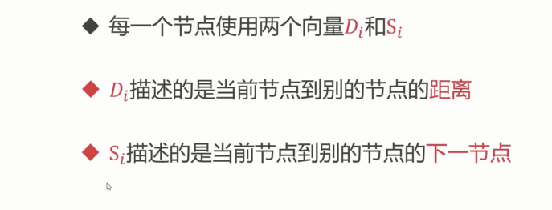

<h1 id="内部网关路由协议的RIP协议"><a href="#内部网关路由协议的RIP协议" class="headerlink" title="内部网关路由协议的RIP协议"></a>内部网关路由协议的RIP协议</h1><h1 id="距离矢量DV算法"><a href="#距离矢量DV算法" class="headerlink" title="距离矢量DV算法"></a>距离矢量DV算法</h1><h2 id="方法"><a href="#方法" class="headerlink" title="方法"></a>方法</h2><p></p>
<p></p>
<p></p>
<h2 id="示例"><a href="#示例" class="headerlink" title="示例"></a>示例</h2><p></p>
<p>距离矢量信息可能是过时的,导致两个方向的距离不同</p>
<p></p>
<p></p>
<p>计算完成之后跟自己的距离矢量进行比较</p>
<p></p>
<p>设置下一跳</p>
<p></p>
<h2 id="步骤"><a href="#步骤" class="headerlink" title="步骤"></a>步骤</h2><ol>
<li><p></p>
</li>
</ol>
<p>2.</p>
<p></p>
<h1 id="RIP协议的过程"><a href="#RIP协议的过程" class="headerlink" title="RIP协议的过程"></a>RIP协议的过程</h1><h2 id="概念"><a href="#概念" class="headerlink" title="概念"></a>概念</h2><p></p>
<h2 id="方法-1"><a href="#方法-1" class="headerlink" title="方法"></a>方法</h2><ul>
<li>每隔<code>30</code>s交换一次路由信息</li>
<li>跳数&gt;<code>15</code> 就是不可达路由</li>
</ul>
<p></p>
<h2 id="过程"><a href="#过程" class="headerlink" title="过程"></a>过程</h2><p></p>
<h3 id="具体过程"><a href="#具体过程" class="headerlink" title="具体过程"></a>具体过程</h3><ul>
<li>第一步 路由器的初始化路由表</li>
</ul>
<p></p>
<ul>
<li>第二步</li>
</ul>
<p></p>
<ul>
<li>第三步</li>
<li>目的地|距离|下一跳</li>
</ul>
<p></p>
<h1 id="缺陷"><a href="#缺陷" class="headerlink" title="缺陷"></a>缺陷</h1><h2 id="故障信息传递慢"><a href="#故障信息传递慢" class="headerlink" title="故障信息传递慢"></a>故障信息传递慢</h2><p>路由器随便相信相邻节点的信息</p>
<p></p>
<h1 id="总结"><a href="#总结" class="headerlink" title="总结"></a>总结</h1><ul>
<li>实现简单,开销小</li>
<li>限制了网络的规模</li>
<li>故障信息诊断慢</li>
</ul>
